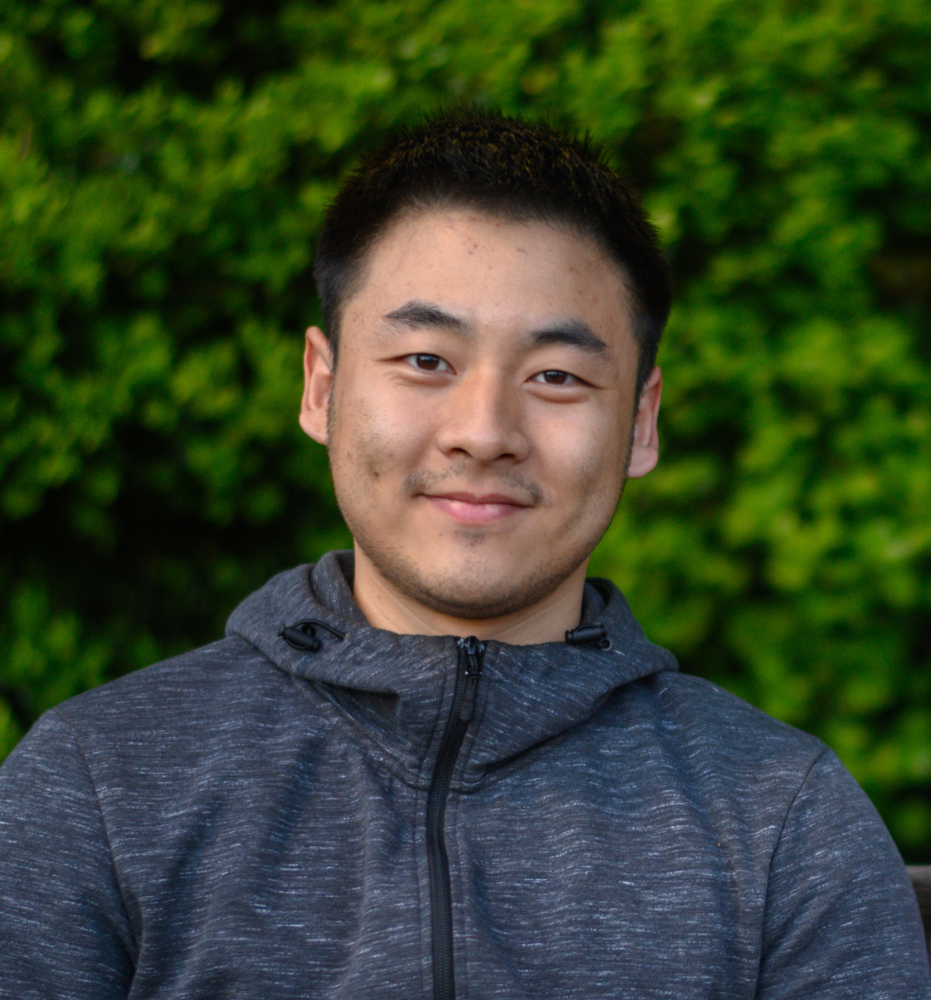

Yaodong Yu is a PhD student in the EECS department at UC Berkeley advised by Prof. Michael I. Jordan and Prof. Yi Ma. He obtained his B.S. from the Department of Mathematics at Nanjing University, and his M.S. from the Department of Computer Science, University of Virginia. His research interests are in machine learning and optimization. Topics that he is actively working on include robust machine learning under distribution shift, federated learning, and understanding of overparameterized (deep learning) models. His goal is to make machine learning more reliable and robust.
Short Abstract: We propose a metric -- Projection Norm -- to predict a model's performance on out-of-distribution (OOD) data without access to ground truth labels. Projection Norm first uses model predictions to pseudo-label test samples and then trains a new model on the pseudo-labels. The more the new model's parameters differ from an in-distribution model, the greater the predicted OOD error. Empirically, our approach outperforms existing methods on both image and text classification tasks and across different network architectures. Theoretically, we connect our approach to a bound on the test error for overparameterized linear models. Furthermore, we find that Projection Norm is the only approach that achieves non-trivial detection performance on adversarial examples. Our code is available at https://github.com/yaodongyu/ProjNorm.
This is a joint work with Zitong Yang, Alexander Wei, Yi Ma, and Jacob Steinhardt.